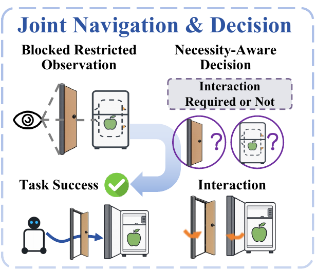
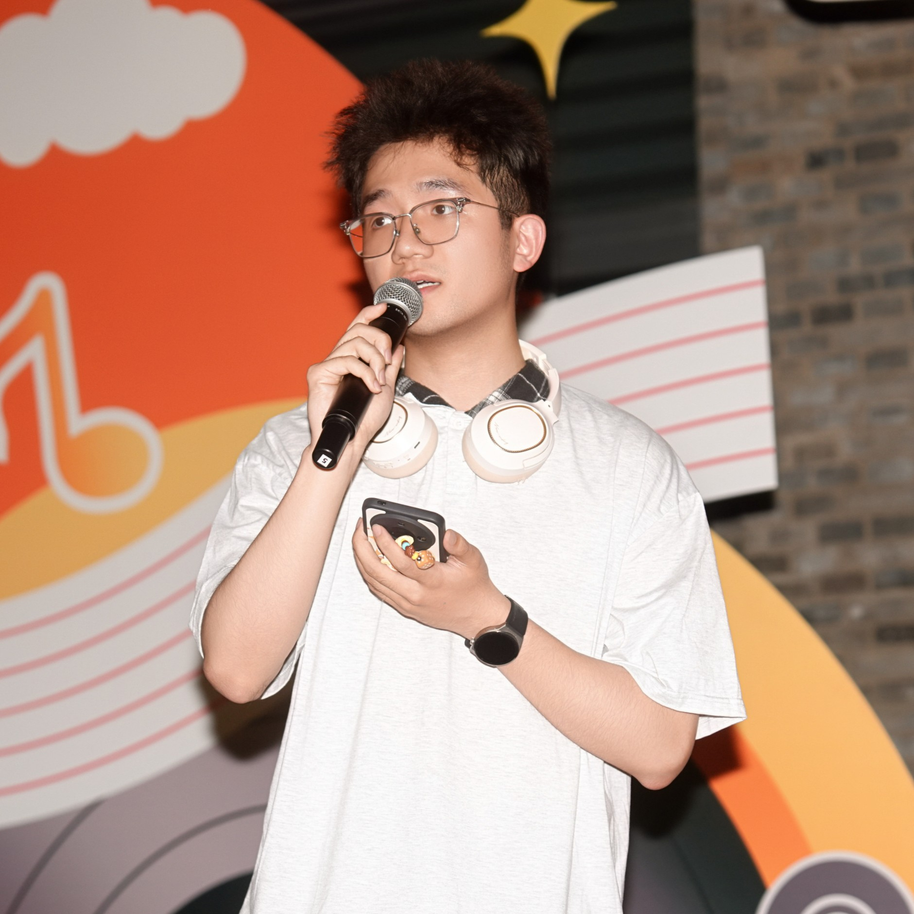
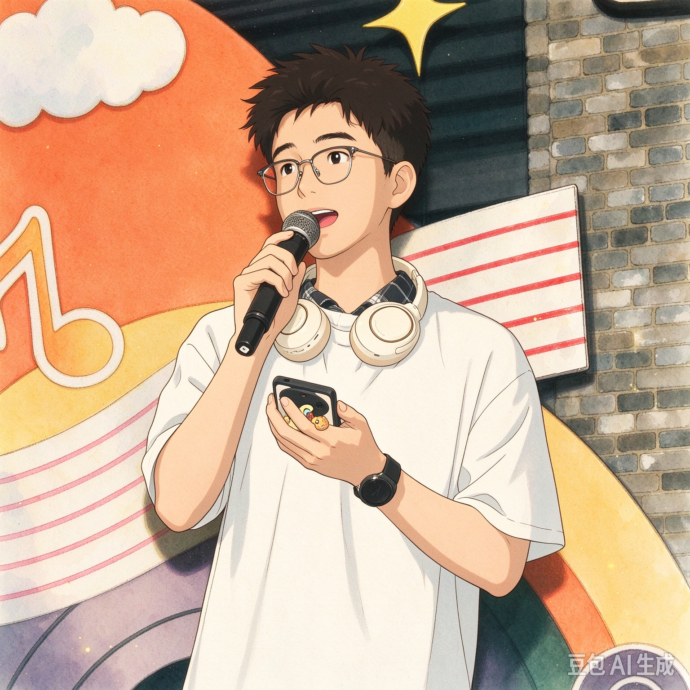
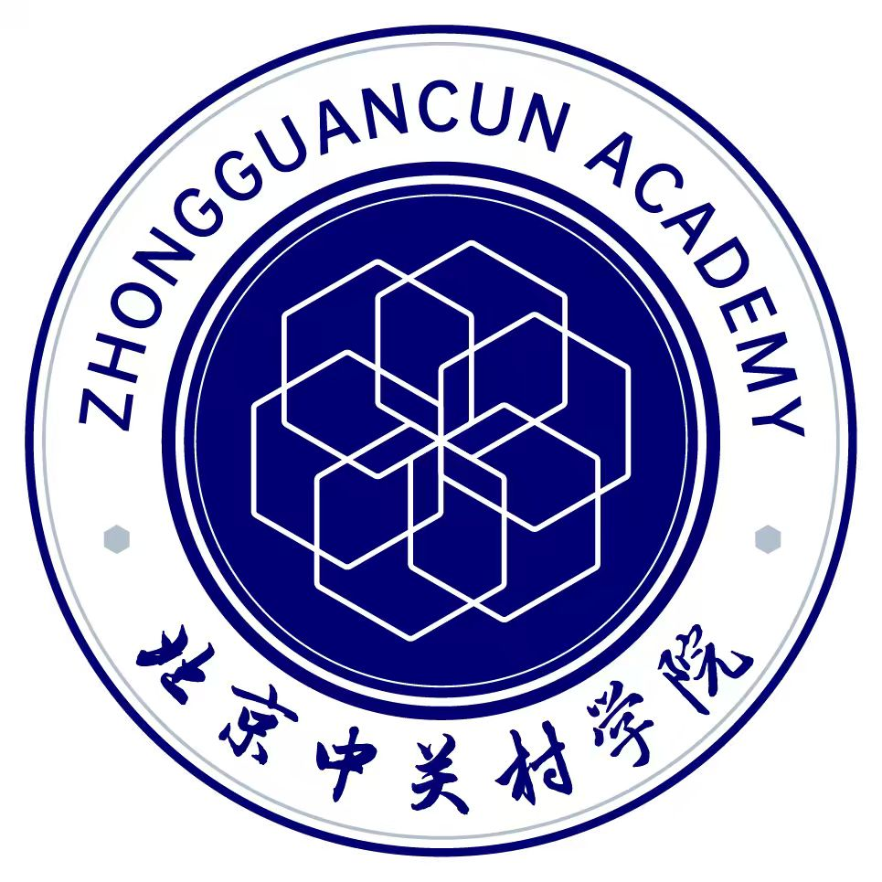
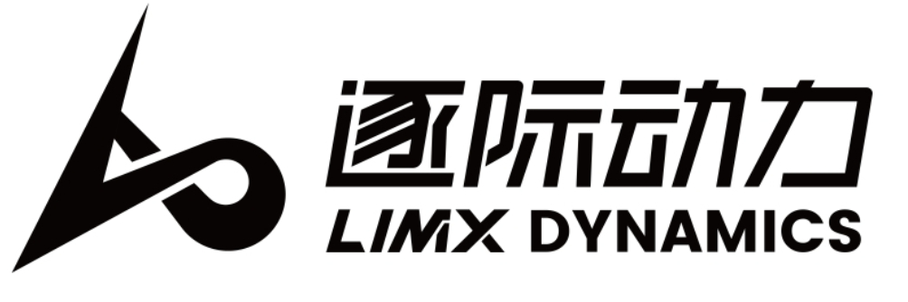
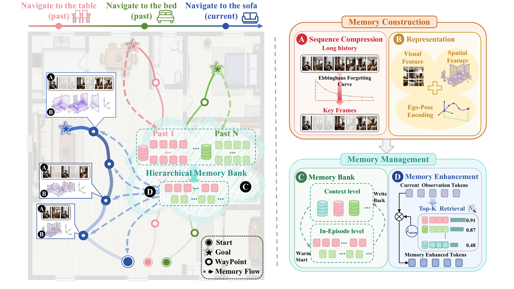
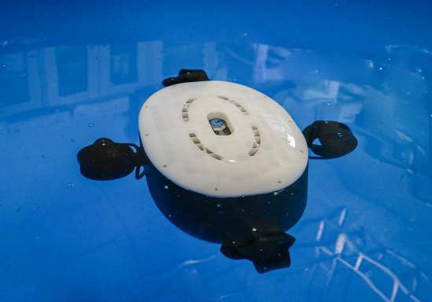

Y1Fei Wang
Embodied AI · Robotics
A third-year Ph.D. student at School of Advanced Manufacturing and Robotics, Peking University, advised by Professor Junzhi Yu.
Also a research intern at Zhongguancun Academy, advised by Professor Xingyu Chen.
Prior to that, I earned my B.Eng. degree in Intelligent Manufacturing Engineering from the Beijing Institute of Technology (BIT).
My research interests focus on Embodied Intelligence and Robotics, including VLA, RL and CV.


News
- 03/2026: Our paper OAT-UUV has been accepted by IEEE/ASME Trans. Mechat.!
- 10/2025: Our paper OAT-AUV has been accepted by ROBIO 2025!
- 06/2025: Our paper Evidence-Based Tri-Branch Cross-Pseudo Supervision Method has been accepted by IROS 2025!
Show more ↓
Thanks to all collaborators and supporters, looking forward to more exciting research ahead!
Experience

HMI Lab, Zhongguancun Academy
2026.02 - PresentResearch Intern - Interactive navigation

Limx dynamix
2026.04 - PresentCampus Ambassador
Research
My long-term vision is to build the GENERAL and INTERACTRIC embodied intelligence. 🤖🧠


* Equal contribution. † Corresponding author.
Awards & Achievements
- [2026] Peking University Graduate Student Special Academic Scholarship
- [2025] Peking University Graduate Student Special Academic Scholarship
- [2024] Beijing Institute of Technology Outstanding Graduates
Academic Service
- Reviewer at journals: RA-L
- Reviewer at conferences: ICRA 2026